Live training banner: five variants
Five different takes on the Home banner for Clarity Live Training. Each one runs in the real app with Clarity's own buttons, fonts and colors, so these are screenshots, not mockups. All five link to lp.clarity.video/live-training and can be dismissed for one session.
Captured 20 October 2026 on the e2e test account, in Pacific time. Pull request: #985.
Today's banner (for reference)
Three small stacked lines and a lone button at the far edge. The date is hard to find, and the row reads as empty space.
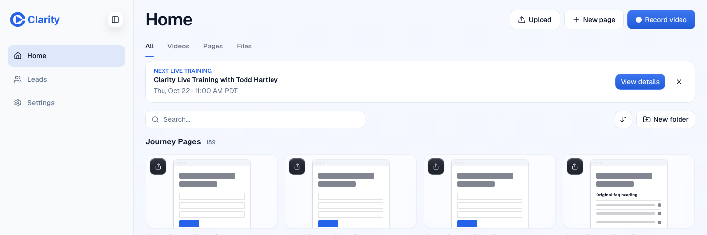
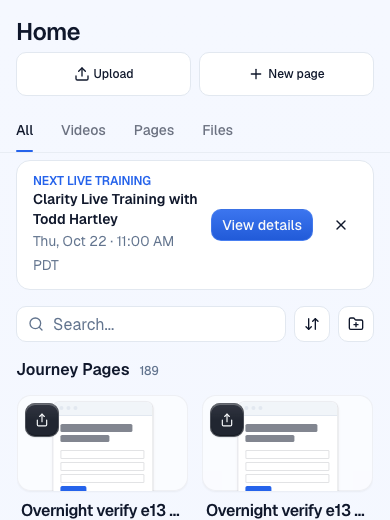
1. Calendar tile
A tear-off calendar date on the left, so the day reads at a glance. The title and time sit beside it, with a quiet outline button. It's calm enough to stay on Home every day.
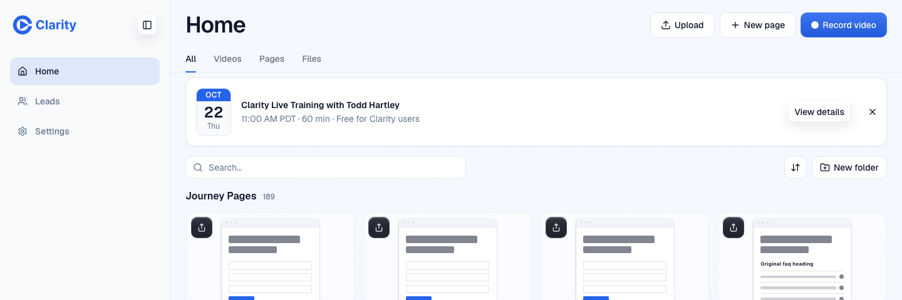
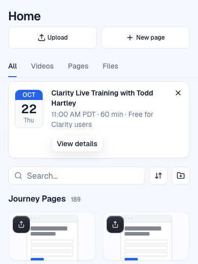
2. Slim strip
One thin tinted line with a dot, the title and the date, and a Details link. It takes the least room and is the easiest to ignore. On a phone it wraps to two lines.
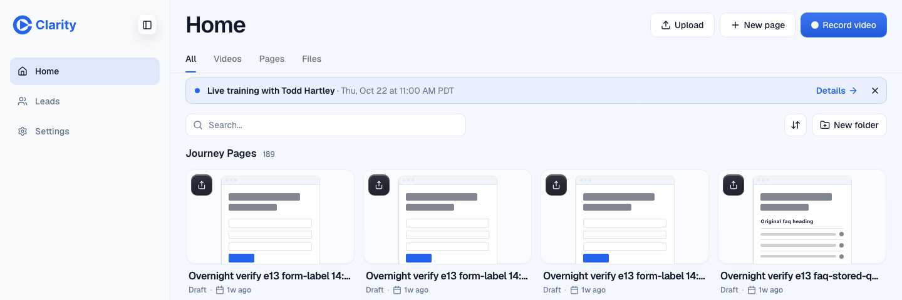
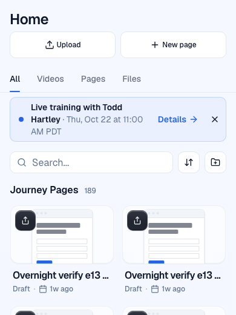
3. Brand feature
A blue-tinted card with a broadcast icon, a countdown chip, date and time with icons, and a solid primary button. It's the most promotional of the five and takes about twice the height.
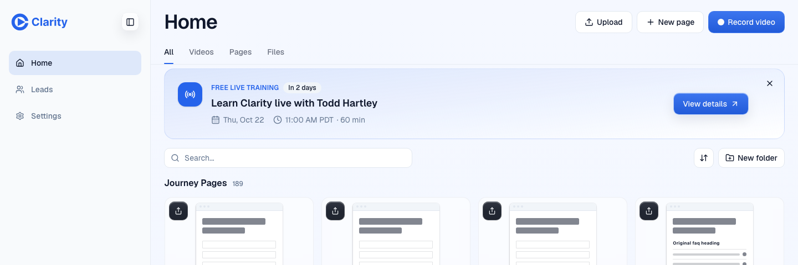
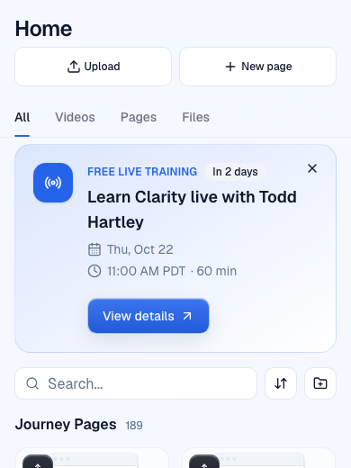
4. Host
Todd's face with a LIVE tag and a sentence like a notification: Todd Hartley is teaching a free Clarity live training, in 2 days. It's personal. The photo is a frame from his Learn video, so a real headshot would look better.
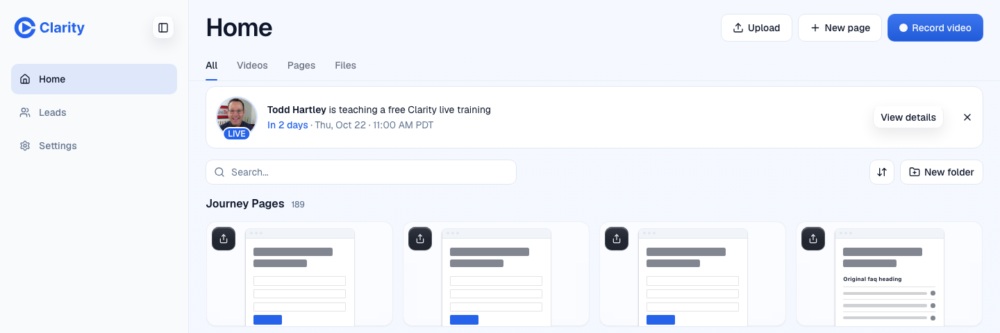
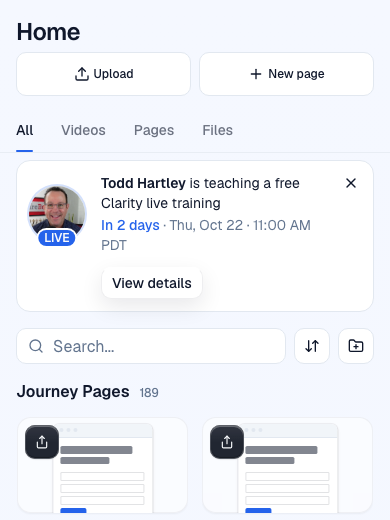
5. Dark spotlight
A dark navy card with a blue glow that matches the dark landing page it opens. It has the strongest contrast, and it may feel heavy as a permanent fixture of a light Home page.
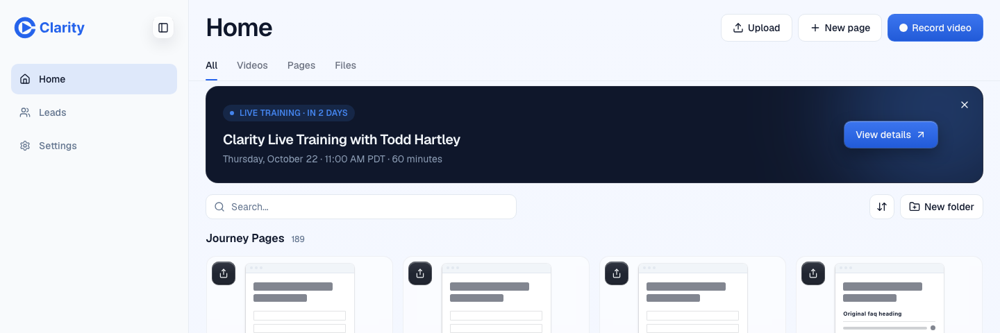
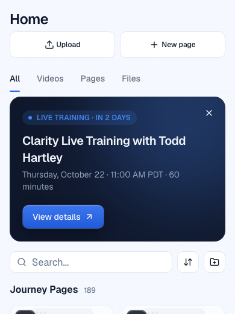